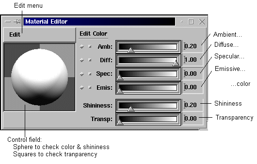

| Before using the Material Editor, select
a geometry object either by
clicking in the GeometryObjects selection list or clicking on the geometry object itself (in PickMode!) |
For using the editor look at the Material
Editor popup together with the description below.
The Material Editor provides the Edit
menu (Material List / Continuous / Manual / Copy / Paste / Help), the Control
field and the Sliders (Color / Shininess / Transparency):
|  |
The slider values have the following meaning:
| For all kinds of color above you can click to get a full ColorEditor. |
| 0.0 | no transparency | you see the covering object only |
| 0.0< transparency <1.0 | limited transparency | you see both objects |
| 1.0 | full transparency | you see the covered object only |
| Check color and shininess looking at the sphere in the control field, check transparency looking how much of the squares you see shining thru the sphere. |
Use the option 'manual' from the Edit
menu to prevent changes beeing reflected immediately